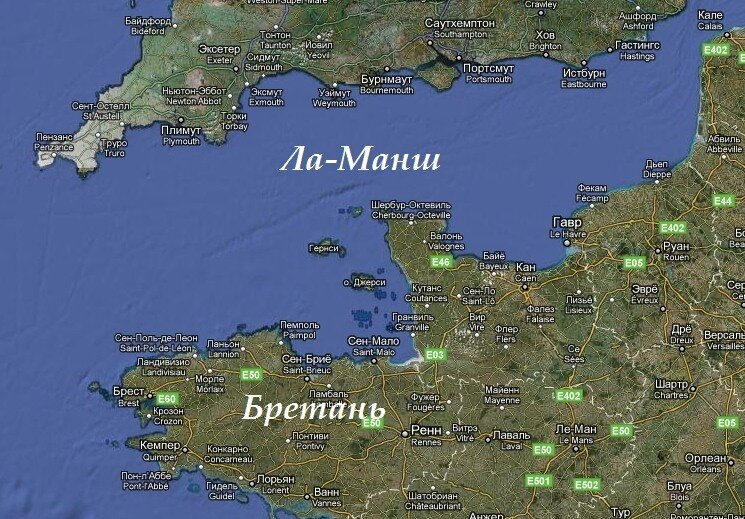
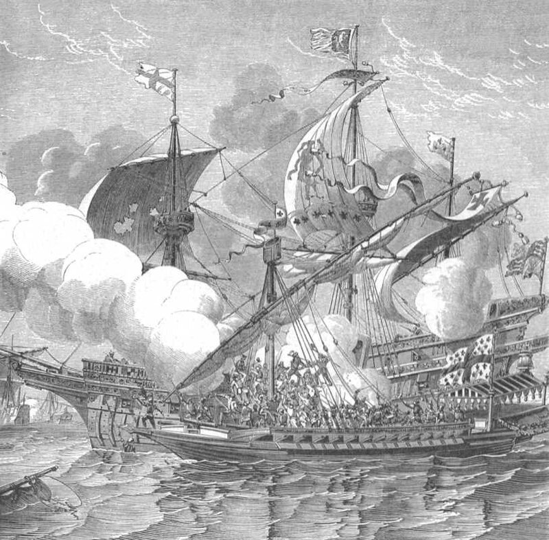
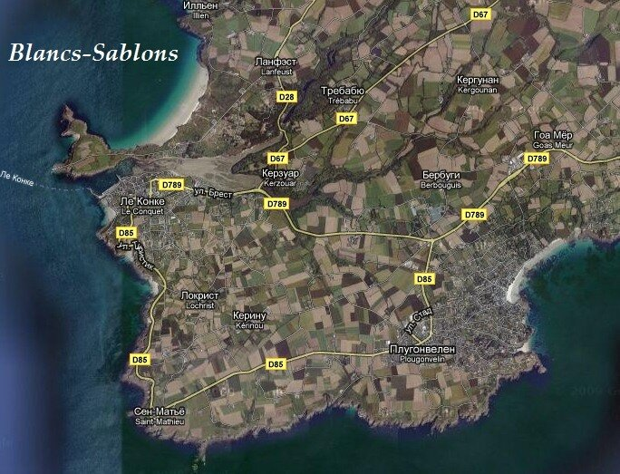

Мы прервали свой рассказ о противостоянии между Англией и Францией на событиях осени 1512 года.
Зимой ни англичане, ни французы не сидели без дела … Вот что пишет об этом Сануто в своих «Дневниках»:
«Парламент дал санкцию на решение короля лично пересечь канал весной и начать действия против Франции. Он направил в Венецию людей с целью получить там тяжелые галеры, так как капитан французского короля Прежан прибыл в Бретань некоторое время назад с двумя тяжелыми (bastard) и четырьмя легкими (subtile) галерами, совершив переход вокруг Испании, Галиции и через Бискай… Король также направил указание в Руан начать постройку галер. Вместо большого корабля Regent, сгоревшего в бою, король Англии приказал построить еще больший. Парламент выделил 600 000 фунтов на эти цели.» (. Sanuto, Diarii, XV, 529)

Современная карта района боевых действий
Поздней осенью 1512 года Людовик XII приказал, как уже было сказано, Генералу галер Прежану де Биду выйти с эскадрой из шести галер из Средиземного моря для усиления флота в Бресте. Эскадра шла вокруг Испании, используя (при благосклонном отношении короля Мануэля I) в качестве укрытия от флота испанского адмирала Лескано гавани Португалии, что вызвало негодование Фердинанда Католика. Прибытие Прежана в Бретань позволило изменить баланс сил в Ла-Манше , так как шесть современных галер, прошедших серьезное испытание в войнах на Средиземном море, были достаточно серьезным оружием.
На борту трех галер эскадры в носовой их части были размещены новейшие для того времени орудия большого калибра («василиск»), изготовленные в Венеции и способные, как писал известный историк того времени Петер Мартир, «одним выстрелом пробить насквозь любой корабль» (Opus epistolarum, ep. n°498). (Изображение и некоторые характеристики галерной артиллерии мы приводили ранее). В то время, когда в основу военно-морской тактики англичан был положен бортовой залп корабельной артиллерии, способный внушить противнику страх еще до того, как корабли оказывались борт о борт в абордажной схватке, маневренные галеры оказались неприятной неожиданностью для англичан с их неуклюжими парусными кораблями. Слишком хрупкие, чтобы противостоять шквалам в Ла-Манше или вступать в открытую дуэль с тяжелыми карраками, галеры Прежана де Биду идеально подходили для защиты гаваней и бухт Бретани и поддержки основных сил флота. Кроме того, их взрывная скорость была достаточна для атаки противника с фланга или нарушения коммуникаций, обеспечивающих снабжение флота Говарда из английских портов. Говард, совершенно не имевший опыта боевых действий против галер, и даже, как представляется, не получивший вовремя информации об их присутствии, направился со своим флотом прямо в западню. А Прежан де Биду был известным в то время специалистом по военно-морскому искусству . Его действия против венецианцев и генуэзцев в 1510 году приводились в качестве образца морской тактики в итальянских руководствах еще долгие годы после его смерти.
12 апреля 1513 года англичане прибыли в залив Bertheaume, из которого узкий пролив вел во внутреннюю гавань Бреста (Rade de Brest) , где укрылись застигнутые врасплох французские корабли. Прежана, однако, там не было. Отброшенный штормом от Плимута, куда он планировал совершить внезапный набег, Прежан укрылся в Сен-Мало, где и узнал о прибытии Говарда к Бресту. Говард тем временем направил послание Генриху: "что касается галер, мы разделаемся с ними ... и , сэр, если после этого сюда придут новые галеры, они не смогут уйти по доброму." (A.Spont Letters and Papers Relating to the War with France 1512—1513. Publications of the Navy Records Society, Vol. X., 1897)
Итак, Брест был блокирован. В идеале Говард хотел бы захватить порт, но у него не было для этого достаточных сил. Это не помешало ему высадить 1500 человек чтобы жечь и грабить прибрежные поселения (хотя французы имели в этом районе 10 000 войск). Говарда заботили две вещи, обычная проблема для английского флота – снабжение продовольствием, и французские галеры, которые могли вернуться из Сен-Мало в любое время. Он принял для себя решение, что если они все же появятся, он будет атаковать их со шлюпок и малых судов. Его худшие опасения вскоре оправдались. Галеры под командованием Прежана де Биду появились как снег на голову, рассекли порядки его флота, потопив корабль капитана Комптона и нанеся тяжелые повреждения одному из новых королевских барков (возможно, Lesse Bark.)

Объявив таким образом о своем присутствии, галеры Прежана отступили в бухту, которую англичане называли Whitsand Bay, а французы – Blancs-Sablons, рядом с Ле Конке, и укрепили узкий вход в нее, разместив орудия на окружающих скалах.

В соответствии с общепринятой тактикой галер, французский генерал поставил свои галеры на якорь кормой к берегу, с пушками, обращенными в сторону моря. Став на якорь вблизи от достаточно крупного города Ле Конке, галеры Биду могли получать предметы снабжения и воду, а также получить подкрепление при любой атаке англичан на Ле Конке. Со своей позиции Биду мог отплыть в любое время, которое он сам определял, оставаясь таким образом постоянной угрозой для блокирующего флота англичан
Адмирал Говард, знающий о холодном приеме, который король оказал графу Дорсету, когда тот вернулся из Испании, не добившись успеха, понимал, что сохранить расположение короля он может лишь нейтрализовав эту угрозу. Англичане попытались высадить десант, чтобы захватить галеры с тыла, но быстро вернулись, напуганные отвлекающим маневром главных сил французского флота.
О дальнейшем развитии событий мы расскажем в следующий раз.